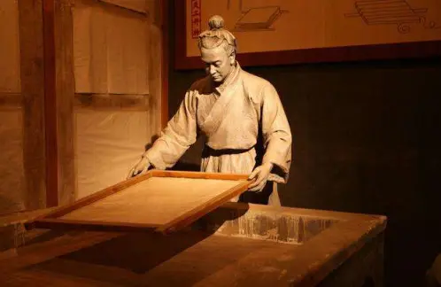

联系我们:100010（工作时间：24h） 在线客服（24h无人接待）
自创备案号：1234-56789 Chrome商店下载版权与免责声明版权申诉出版物许可证
| 主页 | 造纸术 | 印刷术 | 火药 | 指南针 |
|
印刷术 |
印刷术是中国古代劳动人民的四大发明之一。雕版印刷术发明于唐朝，并在唐朝中后期普遍使用。宋仁宗时毕昇发明了活字印刷术标志着活字印刷术的诞生。他是世界上第一个发明人，比德国人约翰内斯·古腾堡的铅活字印刷术早约400年标志着活字印刷术的诞生。
发展与历史
印刷术发明前，欧洲人九成是文盲，贵族里文盲也很多。因为中世纪的书籍太贵了，一本圣经要用1000张小羊皮制作。除了大部头的圣经，抄在书上的信息都很严肃，宗教内容居多，娱乐或日常实用信息几乎没有。印刷术发明之前，文化的传播主要靠手抄的书籍。手抄费时、费事，又容易抄错、抄漏，既阻碍了文化的发展，又给文化的传播带来不应有的损失。印章和石刻给印刷术提供了直接的经验性的启示，用纸在石碑上墨拓的方法，直接为雕版印刷指明了方向。中国的印刷术经过雕版印刷和活字印刷两个阶段的发展，给人类的发展献上了一份厚礼。印刷术的特点是方便灵活、省时、省力，是古代印刷术的重大突破 。
印刷术的意义 
印刷术的发明，是人类文明史上的光辉篇章，而建立这一伟绩殊勋的莫大光荣属于中华民族。 印本的大量生产，使书籍留存的机会增加，减少手写本因有限的收藏而遭受绝灭的可能性。由于印本的广泛传播及读者数量的增加，过去教会对学术的垄断遭到世俗人士的挑战。宗教著作的优先地位也逐渐为人文主义学者的作品所取代产读者们对于历来存在的对古籍中的分歧和矛盾有所认识，因而削弱了对传统说法的信心，进而为新学问的发展建立了基础。 印刷使版本统一，这和手抄本不可避免产生的讹误，有明显的差异。印刷术本身不能保证文字无误，但是在印刷前的校对及印刷后的勘误表，使得后出的印本更趋完善。通过印刷工作者进行的先期编辑，使得书籍的形式日渐统一，而不是像从前手抄者的各随所好。凡此种种，使读者养成一种有系统的思想方法，并促进各种不同学科组织的结构方式得以形成。 印刷术的传人使欧洲宗教改革的主张广为传播。马丁·路德曾称印刷术为“上帝至高无上的恩赐，使得福音更能传扬”。
|
联系我们:100010（工作时间：24h） 在线客服（24h无人接待）
自创备案号：1234-56789 Chrome商店下载版权与免责声明版权申诉出版物许可证